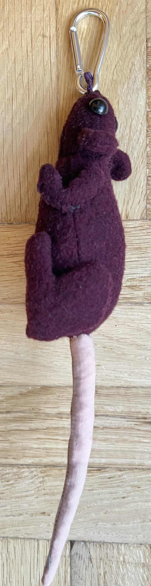
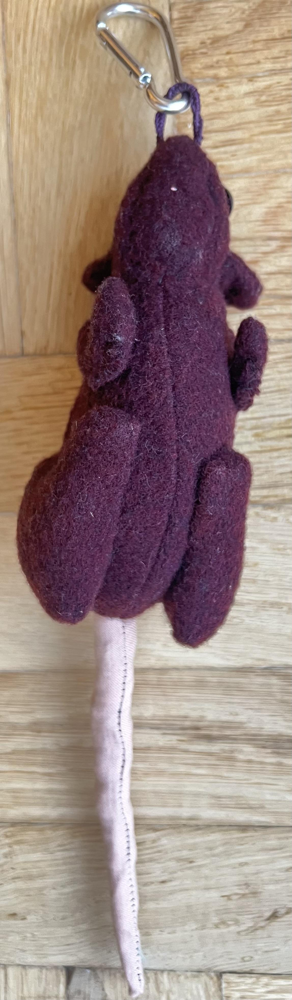
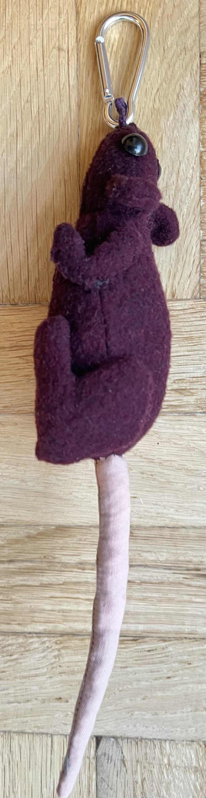
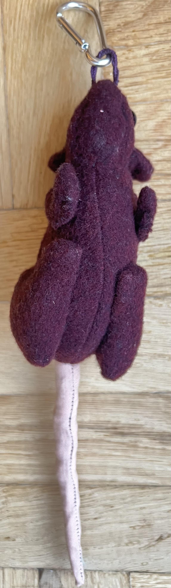
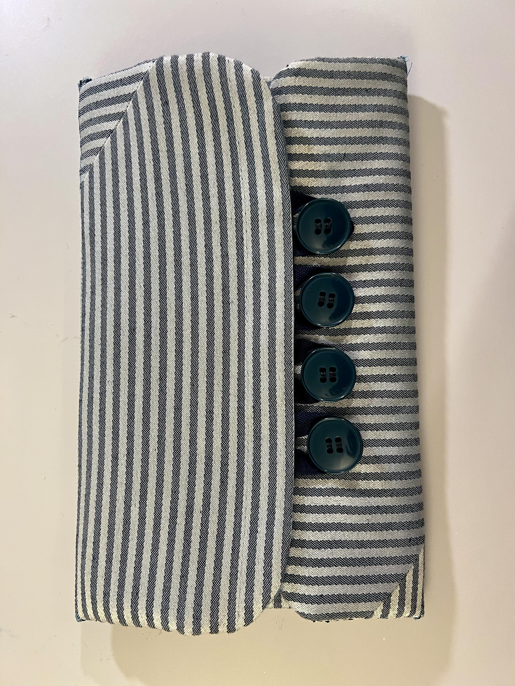
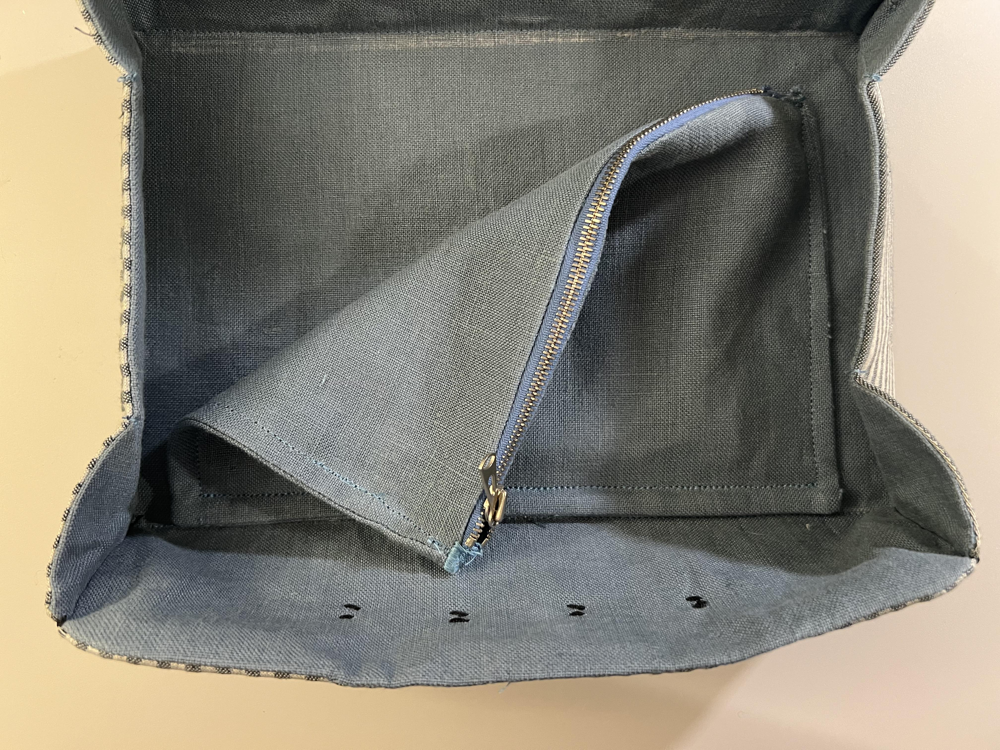
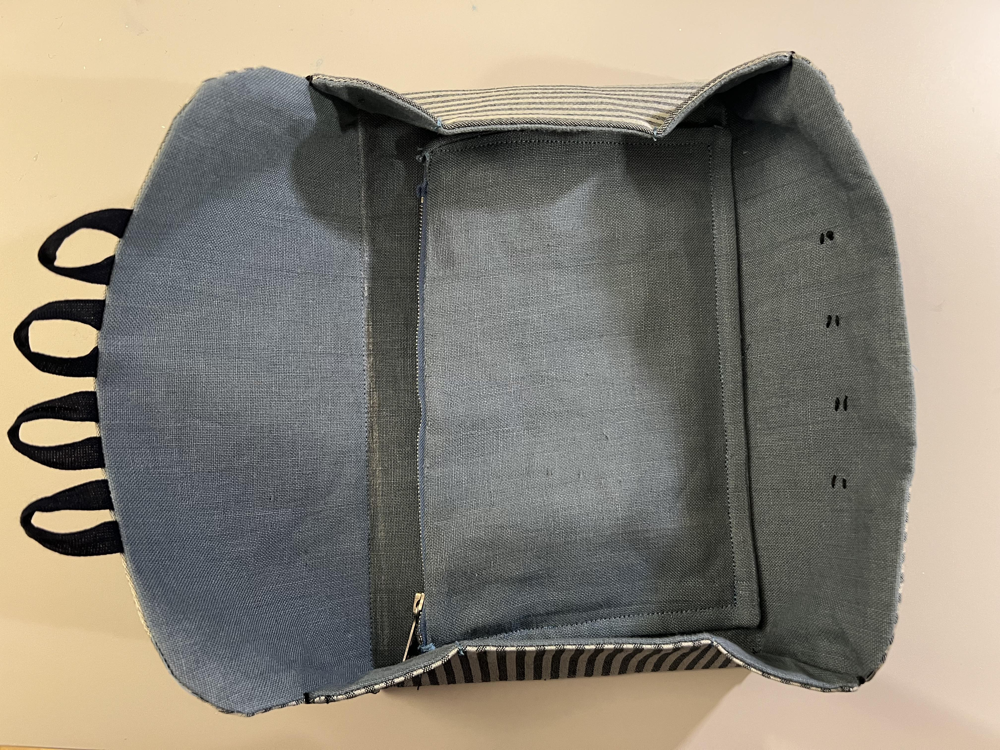
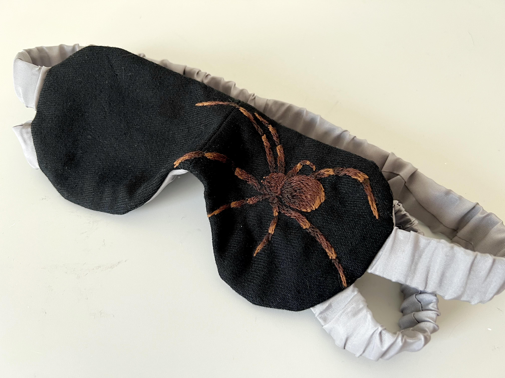
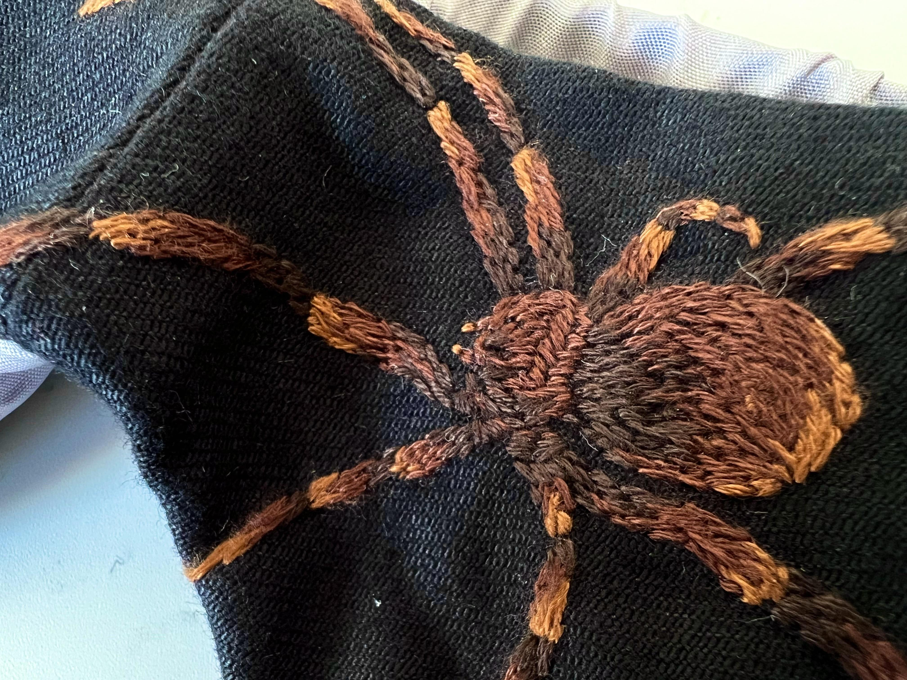

Red Rat Keychain
I made this rat out of some scrap red wool for no purpose or reason. It's stuffed with more scrap fabric and thread, the eyes are buttons. mostly hand sewn except the big seams along the body.
 



Red Backpack with Patches
I made this backpack out of red cotton canvas that used to be IKEA curtains and heavyweight fusible interfacing on the outside, and heavy cotton-poly blend curtains from the thrift store on the inside. the black edge binding is stretch polyester which is how i got it to lie so smooth. The flops that look like little dog ears on the side can be used to attach the backpack to my front when I'm wearing the big touring backpack on longer trips which is very convenient, because then I can have a second smaller backpack as a plane carry-on. There is a back support that is essentially a fully boned back panel with 6mm cable ties that can be taken out, which lets the backpack be packed really small. There is also a little loop on the inside to attach a carabiner to hook a nalgene bottle into, and the inside pockets fit my laptop and iPad. Also since it's just cotton canvas I can sew patches onto it.
!!! TODO pictures
Sewing Project Bag
This is a bag for portable small sewing or embroidery projects also made from scrap and heavyweight fusible interfacing. It's based on this tutorial, but I changed the measurements slightly to make it a bit larger. This also made the front overlap very small because I scaled it incorrectly I think, so if I were to do it again I would just elongate the bottom flap as well to make it completely symmetrical. I added the little center zipper bag to close the overlap more securely so that nothing falls out. It is mostly nice because it turns into a little tray when you open it.
  Spider sleep mask
This is a sleep mask out of two layers of black cotton denim (cut from a pair of jeans) and two layers of viscose lining. The pattern is in two pieces to add a curve for the nose, and there are two elastic straps encased in the lining (maybe a little on the tight side, I might extend them if it bothers me too much). The seam on the nose is also a little thick, maybe trimming the seam allowances further would help, but it's also just very thick fabric so maybe not. I clipped the seam allowances all around the edges but they should probably also be cut shorter than I did just because the fabric is so heavy. I did not topstitch around the edge but I might go back and do it if the ironing doesn't give enough structure on it's own or it gets weird in the laundry. The embroidery is cotton thread with pretty short stitches so it can go in the washing machine.
 